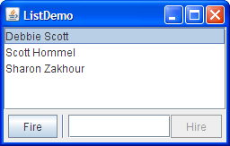

TheJSeparatorclass provides a horizontal or vertical dividing line or empty space. It's most commonly used in menus and tool bars. In fact, you can use separators without even knowing that aJSeparatorclass exists, since menus and tool bars provide convenience methods that create and add separators customized for their containers. Separators are somewhat similar to borders, except that they are genuine components and, as such, are drawn inside a container, rather than around the edges of a particular component.Here is a picture of a menu that has three separators, used to divide the menu into four groups of items:
The code to add the menu items and separators to the menu is extremely simple, boiling down to something like this:
menu.add(menuItem1); menu.add(menuItem2); menu.add(menuItem3); menu.addSeparator(); menu.add(rbMenuItem1); menu.add(rbMenuItem2); menu.addSeparator(); menu.add(cbMenuItem1); menu.add(cbMenuItem2); menu.addSeparator(); menu.add(submenu);Adding separators to a tool bar is similar. You can find the full code explained in the how-to sections for menus and tool bars. If you want more control over separators in menus and tool bars, you can directly use the
JSeparatorsubclasses that implement them: JPopupMenu.Separator and JToolBar.Separator. In particular,JToolBar.Separatorhas API for specifying the separator's size.

Using JSeparator
You can use the
JSeparatorclass directly to provide a dividing line in any container. The following picture shows a GUI that has a separator to the right of the button labeled Fire. Separators have almost no API and are extremely easy to use as long as you keep one thing in mind: In most implementations, a vertical separator has a preferred height of 0, and a horizontal separator has a preferred width of 0. This means a separator is not visible unless you either set its preferred size or put it in under the control of a layout manager such as
BorderLayoutorBoxLayoutthat stretches it to fill its available display area.The vertical separator does have a bit of width (and the horizontal a bit of height), so you should see some space where the separator is. However, the actual dividing line isn't drawn unless the width and height are both non-zero.
The following code snippet shows how ListDemo puts together the panel that contains the vertical separator. You can find the full source code for ListDemo in
ListDemo.java.As the code shows, the buttons, separator, and text field all share a single container — aJPanel buttonPane = new JPanel(); buttonPane.setLayout(new BoxLayout(buttonPane, BoxLayout.LINE_AXIS)); buttonPane.add(fireButton); buttonPane.add(Box.createHorizontalStrut(5)); buttonPane.add(new JSeparator(SwingConstants.VERTICAL)); buttonPane.add(Box.createHorizontalStrut(5)); buttonPane.add(employeeName); buttonPane.add(hireButton); buttonPane.setBorder(BorderFactory.createEmptyBorder(5,5,5,5));JPanelinstance that uses a left-to-right box layout. Thanks to the layout manager (and to the fact that separators have unlimited maximum sizes), the separator is automatically made as tall as its available display area.In the preceding code, the horizontal struts are invisible components used to provide space around the separator. A 5-pixel empty border provides a cushion around the panel, and also serves to prevent the separator from extending all the way to the component above it and the window's edge below it.
Here's a picture of another GUI that uses a separator, this time to put a dividing line between a group of controls and a display area.
You can find the code in the example index. Here is the code that sets up the separator's container:
As in the last example, the panel uses an empty border so that the separator doesn't extend all the way to the edges of its container. Placing the separator in the leftmost area of theJPanel panel = new JPanel(new BorderLayout()); ... panel.setBorder(BorderFactory.createEmptyBorder( GAP/2, //top 0, //left GAP/2, //bottom 0)); //right panel.add(new JSeparator(JSeparator.VERTICAL), BorderLayout.LINE_START); panel.add(addressDisplay, BorderLayout.CENTER);BorderLayout-controlled container makes the separator as tall as the address-display component that's in the center of the container. See How to Use BorderLayout for details on how border layouts work.

The Separator API
The API for using separators is minimal, since they have no contents and don't respond to user input.
Creating and Initializing Separators Constructor or Method Purpose void addSeparator()
void addSeparator(Dimension)
(inJToolBar)Append a tool bar separator (which is invisible in most, if not all, look and feels) to the current end of the tool bar. The optional argument specifies the size of the separator. The no-argument version of this method uses a separator with a default size, as determined by the current look and feel. void addSeparator()
void insertSeparator(int)
(inJMenu)Put a separator in the menu. The addSeparatormethod puts the separator at the current end of the menu. TheinsertSeparatormethod inserts the separator into the menu at the specified position.void addSeparator()
(inJPopupMenu)Put a separator at the current end of the popup menu. JSeparator()
JSeparator(int)Create a separator. If you don't specify an argument, the separator is horizontal. The argument can be either SwingConstants.HORIZONTALorSwingConstants.VERTICAL.void setOrientation(int)
int getOrientation()
(inJSeparator)Get or set the separator's orientation, which can be either SwingConstants.HORIZONTALorSwingConstants.VERTICAL.JToolBar.Separator()
JToolBar.Separator(Dimension)Create a separator for use in a tool bar. The optional argument specifies the separator's size. setSeparatorSize(Dimension)
(inJToolBar.Separator)Specify the separator's size. More specifically, the specified Dimensionis used as the separator's minimum, preferred, and maximum sizes.JPopupMenu.Separator() Create a separator for use in a menu.
Examples that Use Separators
Several of this lesson's examples use separators, usually in menus. Here is a list of some of the more interesting examples.
Example Where Described Notes ListDemoThis section and How to Use Lists Uses a vertical separator in a panel controlled by a horizontal box layout. TextInputDemoThis section and How to Use Formatted Text Fields Uses a vertical separator at the left of a panel controlled by a border layout. MenuDemoThis section and How to Use Menus Uses the JMenumethodaddSeparatorto put separators in a menu.ToolBarDemo2How to Use Tool Bars Uses the JToolBarmethodaddSeparatorto put space between two kinds of buttons.